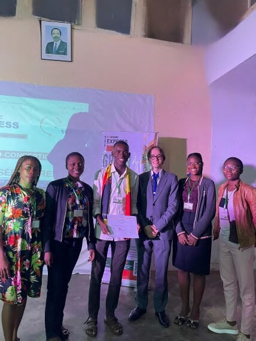

Premier prix

BIOVALOR Yaoundé
Le biogaz de quartier
Une unité locale et décentralisée qui transforme les déchets organiques des marchés et des ménages en biogaz de cuisson et en engrais biologique pour les maraîchers.
Son innovation : un système de purification modulaire, conçu localement et à bas coût, qui rend l'embouteillage du biogaz sûr et rentable à petite échelle.